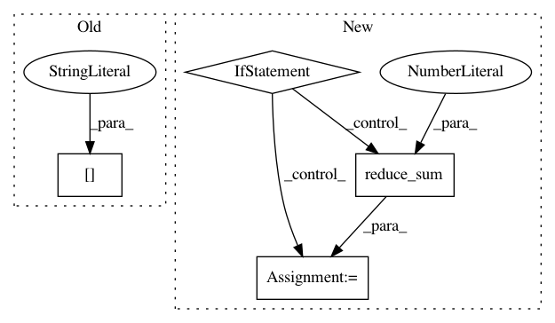

b9b992e52fb42f137e6aa0de6e9f201ef0140571,basic/model.py,,bi_attention,#Any#Any#Any#Any#Any#Any#Any#Any#,16
Before Change
if tensor_dict is not None:
a_h = tf.nn.softmax(h_logits) // [N, M, JX]
a_u = tf.nn.softmax(u_logits) // [N, M, JX, JQ]
tensor_dict["a_h"] = a_h
tensor_dict["a_u"] = a_u
return u_avg, h_a, u_a
After Change
and_mask = h_mask_aug & u_mask_aug
u_avg = tf.reduce_sum(u_aug * tf.cast(tf.expand_dims(u_mask_aug, -1), "float"), 3)
if config.sh:
cell = SHCell(h.get_shape()[3])
h_len = tf.reduce_sum(tf.cast(h_mask, "int32"), 2) // [N, M, JX]
in_ = tf.concat(3, [h, u_avg])
(fw_h, bw_h), _ = bidirectional_dynamic_rnn(cell, cell, in_, h_len, dtype="float", scope="u1") // [N, M, JX, 2d]
h_a = fw_h + bw_h
else:
h_logits = get_logits([h, u_avg], None, True, wd=config.wd, mask=h_mask,
is_train=is_train, func="mul_linear", scope="h_logits") // [N, M, JX]
h_a = softsel(h, h_logits) // [N, M, d]
h_a_tiled = tf.tile(tf.expand_dims(h_a, 2), [1, 1, JX, 1])
u_logits = get_logits([h_aug, u_aug], None, True, wd=config.wd, mask=and_mask,
is_train=is_train, func="mul_linear", scope="u_logits") // [N, M, JX, JQ]
u_a = softsel(u_aug, u_logits) // [N, M, JX, d]
if tensor_dict is not None:
In pattern: SUPERPATTERN
Frequency: 3
Non-data size: 4
Instances
Project Name: wenwei202/iss-rnns
Commit Name: b9b992e52fb42f137e6aa0de6e9f201ef0140571
Time: 2016-10-21
Author: seominjoon@gmail.com
File Name: basic/model.py
Class Name:
Method Name: bi_attention
Project Name: IndicoDataSolutions/finetune
Commit Name: ff789888949c9d55c441b1e277bed322a383c51c
Time: 2020-01-10
Author: benlt@hotmail.co.uk
File Name: finetune/target_models/ordinal_regressor.py
Class Name: ComparisonOrdinalRegressor
Method Name: _target_model
Project Name: NifTK/NiftyNet
Commit Name: 5b5ea7b5d864e53894f5342f19becfba8f8035e5
Time: 2017-12-18
Author: wenqi.li@ucl.ac.uk
File Name: niftynet/network/interventional_dense_net.py
Class Name: INetDense
Method Name: layer_op